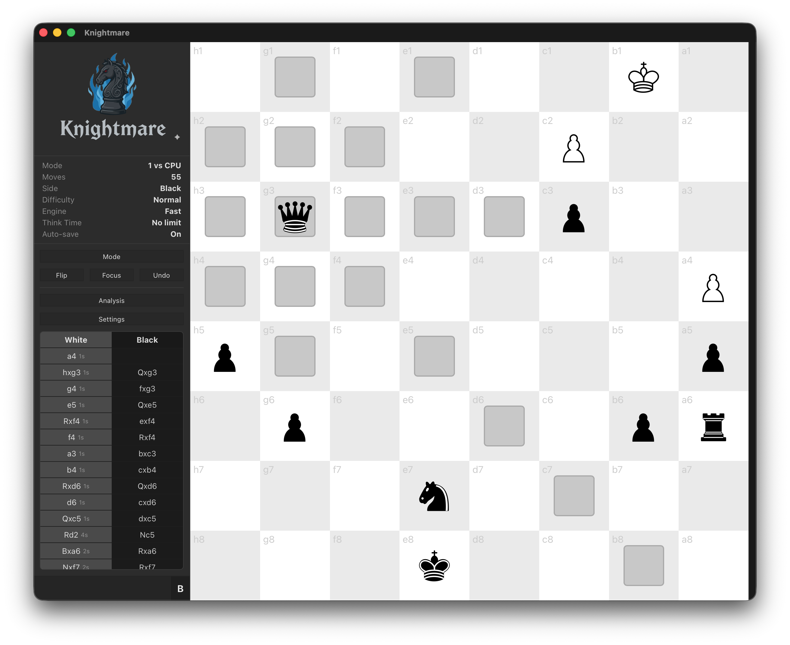

labs.experata.ai — zsh — 80×24
$
ls -l apps/
total 1
Knightmare desktop · macOS / Windows / Linux
● in development
A full-featured chess application built with
React and Redux Toolkit,
packaged as a native desktop app via Tauri.
Challenge a dual AI engine (JavaScript or Rust/WASM), analyze moves with
evaluation breakdowns, and replay games.

$
npm view v23cc
v23cc npm · MIT
github ↗
A set of Claude Code slash commands that offload repetitive tasks to a
local LLM — no cloud API calls, no tokens spent on boilerplate.
Instead of asking Claude to summarize a video or draft a commit message (burning context and API quota), v23cc pipes the work to a locally running model (e.g. Gemma via mlx-lm). Claude stays focused on what it's good at; the local model handles the grunt work.
Instead of asking Claude to summarize a video or draft a commit message (burning context and API quota), v23cc pipes the work to a locally running model (e.g. Gemma via mlx-lm). Claude stays focused on what it's good at; the local model handles the grunt work.
npmpnpmyarnbun
# global install (works in every project) $ npx v23cc@latest --global # or local to one repo (requires .claude/) $ npx v23cc@latest --local # custom namespace → /wp:commit, /wp:pr, … $ npx v23cc@latest --local --namespace wp
- /v23cc:model
- manage which local model preset is active
- /v23cc:config
- show config list
- /v23cc:youtube
- fetch subtitles and summarize a YouTube video in any language
- /v23cc:commit
- generate a git commit message from staged changes
- /v23cc:sync-docs
- update README.md and CLAUDE.md using the local LLM
- /v23cc:branch
- create, switch, rename, track, or list git branches
- /v23cc:pr
- generate a PR title and description from branch diff
- /v23cc:atlassian
- set up Jira & Confluence credentials
- /v23cc:jira
- analyze a Jira issue and suggest an implementation approach
plus Atlassian MCP — search Jira & Confluence directly inside Claude Code via a local MCP server. no slash command needed.
requires Node ≥ 18, Python 3, and a local OpenAI-compatible LLM server (e.g. mlx-lm on port 9000).
$
cat contact.txt
- [email protected]
- github
- github.com/experata-ai
$
_
© 2026 · built with patience & a terminal